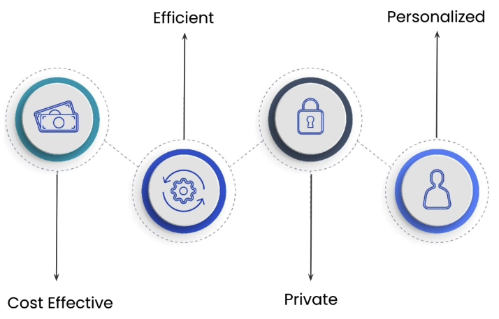
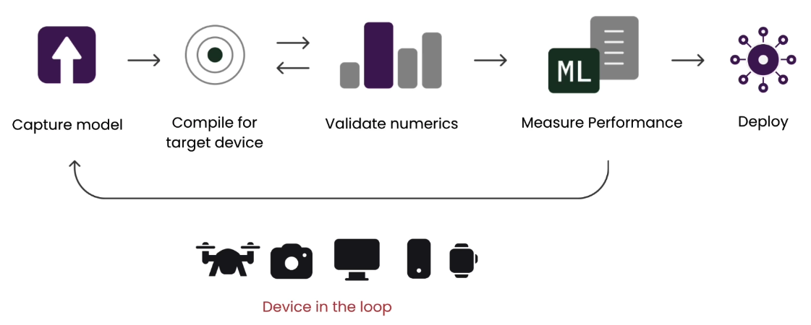
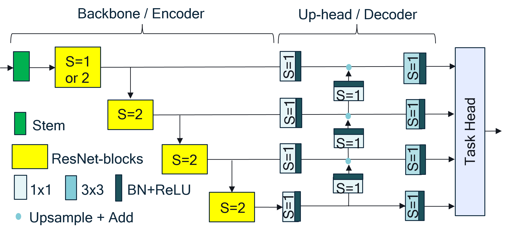
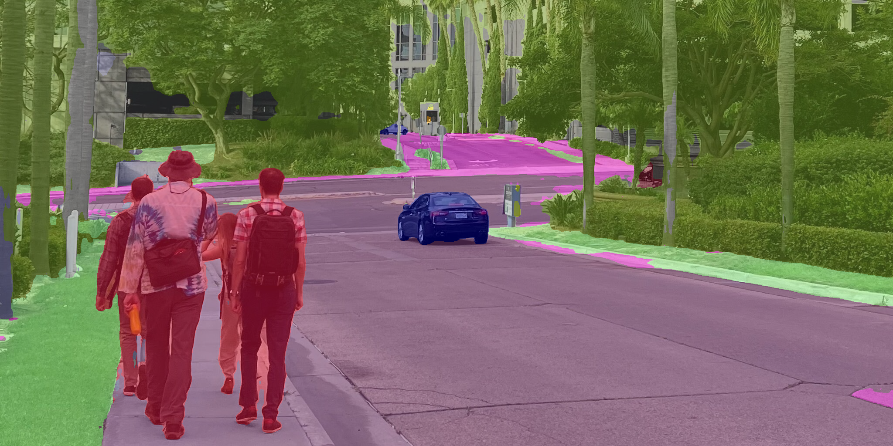
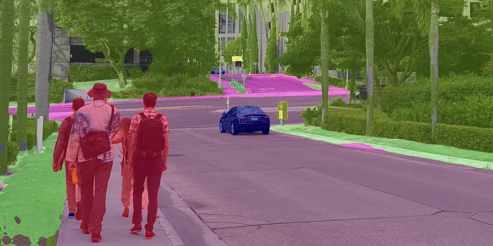
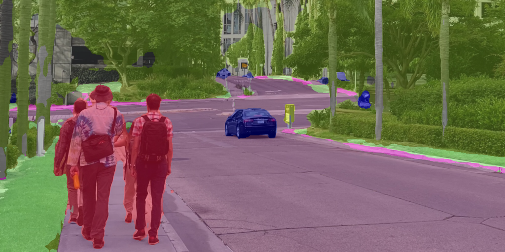
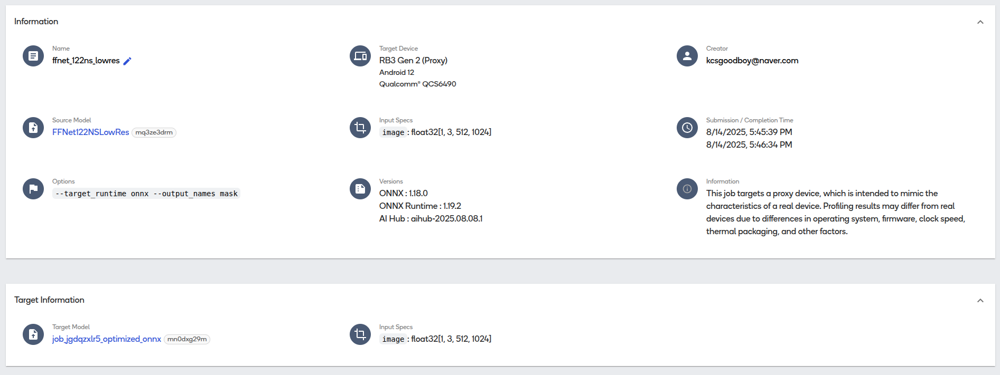

from qai_hub_models.models.ffnet_40s import Model
import torch
from torchinfo import summaryIntroduction
DeepLearning.ai에는 다양한 인공지능 관련 강의가 무료로 공개되어 있다. 그 중에서 최근에 듣고 있는 강의인 “Introduction to on-device AI” 강의에 대해서 조금 정리를 해보고자 한다.
다양한 AI 모델의 등장과 더불어서 스마트폰이나 드론과 같은 휴대용 장치에도 그런 모델들을 올려서 구동시키는 사례가 늘어가고 있다. 하지만 일반적인 학습 환경과 다르게 휴대용 장치에 AI 모델을 올리기 위해서는 휴대용 장치만이 가지는 컴퓨팅 리소스나 통신과 같은 한계를 고려해야 한다. 무엇보다도 가장 크게 고려되는 부분은 저장장치에 대한 한계로, 학습시에는 성능을 위해서 만든 신경망을 적은 저장장치에 올리기 위해서는 모델 변환(model coversion)과 같은 작업이 필요하며, 이에 대한 성능 저하도 어느정도 감수해야 한다. 흔히 모델 변환이라고 하는 것은 사전에 PyTorch나 Tensorflow과 같은 딥러닝 프레임워크로 학습시켜놓은 모델이 있다고 가정했을때, 이를 on-device runtime 환경에 맞게 호환되는 포멧으로 변환시키는 작업을 말한다. 이 과정에서 모델은 보통 frozen (흔히 얼린다고 표현하는데, 모델의 weight나 bias, 그리고 연결등을 고정해놓은 상태를 말한다)이란 단계를 통해서, 학습시 정의된 neural network graph 를 device에서 실행가능한 executable 상태로 변환된다. 이때 같이 고려되는 단계가 양자화(quantization)인데, 모델이 표현되는 데이터의 자료형을 단순화시켜서 모델 크기도 줄이면서 추론속도도 높일 수 있는 장점이 있다.
그래서 해당 강의에서는 On-Device AI에서 필요한 단계를 직접 수행하고, 하드웨어에까지 적용해보는 과정을 진행하게 된다.
Why on-device?

우선 앞에서 소개한 내용처럼 다양한 AI 모델이 만들어졌지만, 이를 왜 휴대용 장치에서 직접 구동시키는 형태가 필요한 것인지에 대한 정의가 필요하다. 강의에서는 크게 4가지로 구분해서 그 필요성에 대해 설명하고 있다.
- Cost Effective: 휴대용 장치의 성능적인 한계로 인해서 추론을 클라우드 환경에서 수행하여 그 결과만으로 구동하게 하는 방법도 있지만, 이 경우, 항상 클라우드와 온라인으로 연결되어 있어야 한다는 조건이 발생하며 이로 인한 의존성이 발생한다. 만약 On-Device AI를 할 수 있다면, 클라우드 컴퓨팅 자원에 대한 의존성을 줄일 수 있어 결과적으로 비용을 줄일 수 있다는 장점을 가지게 된다.
- Efficient: 결과적으로 첫번째 장점과 비슷한 부분이겠지만, 클라우드 컴퓨팅 자원을 활용하여 연산하고 그 결과를 휴대용 장치에서 처리하는데 발생하는 통신비용을 줄일 수 있기 때문에 전력효율이나 처리속도 측면에서 이점을 가져올 수 있다.
- Private: 또한 온라인을 통해서 개인적인 정보를 클라우드에 전달하는 단계를 생략함으로써 보안 측면에서도 도움이 된다.
- Personalization: 마지막으로 추가적인 데이터가 생성되었을때도 해당 데이터를 활용하여 개인에 특화된 서비스나 모델 성능 개선에 활용할 수 있다는 특징을 가진다.
보통 On-Device AI를 수행하기 위해서는 Device-In-The-Loop (DILT) (혹은 Hardware-In-The-Loop라는 표현을 쓰기도 한다) deployment 과정을 수행한다.

일반적인 AI 모델 학습과 다르게, 휴대용 장치에서의 모델 적용은 장비(device)가 연계된 상태에서의 성능 검증 및 최적화 작업이 필요하다. 또한 휴대용 장치의 스펙이 목적에 따라서 다 다르기 때문에, 기기에 따라 접근 방법이 조금씩 다르다. 예를 들어서 NPU가 달린 하드웨어에서 모델을 구동시키기 위해서는 NPU에서 가속을 지원하는 기능을 활용할 수 있도록 컴파일 옵션을 부여한다던가, 혹은 Floating Point를 지원하지 않는 CPU를 가진 하드웨어라면, Floating Point를 지원한 상태에서 학습된 모델도 수행할 수 있도록 변환시 양자화 처리를 해준다던가 하는 방법의 차이를 말한다. 사실 궁극적인 On-Device AI라면 실제 하드웨어에서의 학습, 즉 On-Device Training까지 포함된 형태를 말하는 것이겠지만, 현실적으로 이게 불가능한 부분이기 때문에 학습된 모델을 모델에 올려서 추론한 결과로 개선이 이뤄지는 범위까지만 한정지은 것 같다.
Segmentation Model을 On-Device상에 배포하기
노트
강의에서는 Qualcomm AI Hub에서 배포하는 모델을 활용한 방법을 소개한다. 나 역시, 이전에 소개한 Particle Tachyon에 모델을 올려보는 연습을 하고 있어, 강의에 있는 내용을 그대로 수행해보고자 한다. 로컬 환경에 필요한 환경 설정은 링크에 소개되어 있다. 포스트에서는 강의에 필요한 패키지가 설치되어 있다는 가정하에 실습을 진행해보고 있다.
우선 강의에서 사용한 모델은 Qualcomm AI Research에서 제안한 FFNet-40s(논문)이라는 Real-time Image Segmentation에 최적의 성능을 내는 경령화 모델이다.

Fuss-Free Network (FFNet)은 간단한 ResNet 형태의 backboane과 작은 multi-scale task head로 구성되어 있다. Encoder-Decoder 구조로 되어 있으며, 이전의 Segmentation model로 제안된 HRNet, FANet, DDRNet에 비해서 성능이 좋은 것으로 소개되어 있다. 무엇보다도 연산 측면에서 효율성이 있어, 강의의 목적인 device deployment를 실습하는데 적당한 모델이라고 할 수 있다. 또한 decoder부분이 task head처럼 구성되어 있어, 개발자에 맞게 head의 수를 조절할 수 있다는 특징을 가지고 있다.
우선 모델의 정보와 필요 연산을 확인해보고자 한다. 이때 필요 연산은 network 내 포함된 multiplication 연산과 add 연산의 총합으로 계산해본다.
경고
참고로 qualcomm ai hub에서 배포한 model은 확인해본 바로는 cpu내에서 모든 연산을 수행했기 때문에, 만약 torch cuda가 켜진상태에서 summary를 뽑아보면 오류가 날 것이다. 그렇기 때문에 summary를 하기전에는 cpu로 모델 변환을 해줘야 한다.
model = Model.from_pretrained()
device = torch.device("cuda" if torch.cuda.is_available() else "cpu")
model_cpu = model.to("cpu").eval()Loading pretrained model state dict from /home/chanseok/.qaihm/models/ffnet/v1/ffnet40S/ffnet40S_dBBB_cityscapes_state_dict_quarts.pth
Initializing ffnnet40S_dBBB_mobile weights/home/chanseok/.qaihm/models/cityscapes_segmentation/v2/Qualcomm-AI-research_FFNet_git/models/ffnet_blocks.py:599: FutureWarning: You are using `torch.load` with `weights_only=False` (the current default value), which uses the default pickle module implicitly. It is possible to construct malicious pickle data which will execute arbitrary code during unpickling (See https://github.com/pytorch/pytorch/blob/main/SECURITY.md#untrusted-models for more details). In a future release, the default value for `weights_only` will be flipped to `True`. This limits the functions that could be executed during unpickling. Arbitrary objects will no longer be allowed to be loaded via this mode unless they are explicitly allowlisted by the user via `torch.serialization.add_safe_globals`. We recommend you start setting `weights_only=True` for any use case where you don't have full control of the loaded file. Please open an issue on GitHub for any issues related to this experimental feature.
pretrained_dict = torch.load(model_cpuFFNet40S(
(model): FFNet(
(backbone_model): ResNetS(
(conv0): Conv2d(3, 32, kernel_size=(3, 3), stride=(2, 2), padding=(1, 1), bias=False)
(bn0): BatchNorm2d(32, eps=1e-05, momentum=0.1, affine=True, track_running_stats=True)
(relu0): ReLU(inplace=True)
(conv1): Conv2d(32, 64, kernel_size=(3, 3), stride=(2, 2), padding=(1, 1), bias=False)
(bn1): BatchNorm2d(64, eps=1e-05, momentum=0.1, affine=True, track_running_stats=True)
(relu1): ReLU(inplace=True)
(layer1): Sequential(
(0): BasicBlock(
(conv1): Conv2d(64, 64, kernel_size=(3, 3), stride=(2, 2), padding=(1, 1), bias=False)
(bn1): BatchNorm2d(64, eps=1e-05, momentum=0.1, affine=True, track_running_stats=True)
(conv2): Conv2d(64, 64, kernel_size=(3, 3), stride=(1, 1), padding=(1, 1), bias=False)
(bn2): BatchNorm2d(64, eps=1e-05, momentum=0.1, affine=True, track_running_stats=True)
(relu): ReLU(inplace=True)
(downsample): Sequential(
(0): Conv2d(64, 64, kernel_size=(1, 1), stride=(2, 2), bias=False)
(1): BatchNorm2d(64, eps=1e-05, momentum=0.1, affine=True, track_running_stats=True)
)
)
(1): BasicBlock(
(conv1): Conv2d(64, 64, kernel_size=(3, 3), stride=(1, 1), padding=(1, 1), bias=False)
(bn1): BatchNorm2d(64, eps=1e-05, momentum=0.1, affine=True, track_running_stats=True)
(conv2): Conv2d(64, 64, kernel_size=(3, 3), stride=(1, 1), padding=(1, 1), bias=False)
(bn2): BatchNorm2d(64, eps=1e-05, momentum=0.1, affine=True, track_running_stats=True)
(relu): ReLU(inplace=True)
)
(2): BasicBlock(
(conv1): Conv2d(64, 64, kernel_size=(3, 3), stride=(1, 1), padding=(1, 1), bias=False)
(bn1): BatchNorm2d(64, eps=1e-05, momentum=0.1, affine=True, track_running_stats=True)
(conv2): Conv2d(64, 64, kernel_size=(3, 3), stride=(1, 1), padding=(1, 1), bias=False)
(bn2): BatchNorm2d(64, eps=1e-05, momentum=0.1, affine=True, track_running_stats=True)
(relu): ReLU(inplace=True)
)
(3): BasicBlock(
(conv1): Conv2d(64, 64, kernel_size=(3, 3), stride=(1, 1), padding=(1, 1), bias=False)
(bn1): BatchNorm2d(64, eps=1e-05, momentum=0.1, affine=True, track_running_stats=True)
(conv2): Conv2d(64, 64, kernel_size=(3, 3), stride=(1, 1), padding=(1, 1), bias=False)
(bn2): BatchNorm2d(64, eps=1e-05, momentum=0.1, affine=True, track_running_stats=True)
(relu): ReLU(inplace=True)
)
)
(layer2): Sequential(
(0): BasicBlock(
(conv1): Conv2d(64, 128, kernel_size=(3, 3), stride=(2, 2), padding=(1, 1), bias=False)
(bn1): BatchNorm2d(128, eps=1e-05, momentum=0.1, affine=True, track_running_stats=True)
(conv2): Conv2d(128, 128, kernel_size=(3, 3), stride=(1, 1), padding=(1, 1), bias=False)
(bn2): BatchNorm2d(128, eps=1e-05, momentum=0.1, affine=True, track_running_stats=True)
(relu): ReLU(inplace=True)
(downsample): Sequential(
(0): Conv2d(64, 128, kernel_size=(1, 1), stride=(2, 2), bias=False)
(1): BatchNorm2d(128, eps=1e-05, momentum=0.1, affine=True, track_running_stats=True)
)
)
(1): BasicBlock(
(conv1): Conv2d(128, 128, kernel_size=(3, 3), stride=(1, 1), padding=(1, 1), bias=False)
(bn1): BatchNorm2d(128, eps=1e-05, momentum=0.1, affine=True, track_running_stats=True)
(conv2): Conv2d(128, 128, kernel_size=(3, 3), stride=(1, 1), padding=(1, 1), bias=False)
(bn2): BatchNorm2d(128, eps=1e-05, momentum=0.1, affine=True, track_running_stats=True)
(relu): ReLU(inplace=True)
)
(2): BasicBlock(
(conv1): Conv2d(128, 128, kernel_size=(3, 3), stride=(1, 1), padding=(1, 1), bias=False)
(bn1): BatchNorm2d(128, eps=1e-05, momentum=0.1, affine=True, track_running_stats=True)
(conv2): Conv2d(128, 128, kernel_size=(3, 3), stride=(1, 1), padding=(1, 1), bias=False)
(bn2): BatchNorm2d(128, eps=1e-05, momentum=0.1, affine=True, track_running_stats=True)
(relu): ReLU(inplace=True)
)
(3): BasicBlock(
(conv1): Conv2d(128, 128, kernel_size=(3, 3), stride=(1, 1), padding=(1, 1), bias=False)
(bn1): BatchNorm2d(128, eps=1e-05, momentum=0.1, affine=True, track_running_stats=True)
(conv2): Conv2d(128, 128, kernel_size=(3, 3), stride=(1, 1), padding=(1, 1), bias=False)
(bn2): BatchNorm2d(128, eps=1e-05, momentum=0.1, affine=True, track_running_stats=True)
(relu): ReLU(inplace=True)
)
(4): BasicBlock(
(conv1): Conv2d(128, 128, kernel_size=(3, 3), stride=(1, 1), padding=(1, 1), bias=False)
(bn1): BatchNorm2d(128, eps=1e-05, momentum=0.1, affine=True, track_running_stats=True)
(conv2): Conv2d(128, 128, kernel_size=(3, 3), stride=(1, 1), padding=(1, 1), bias=False)
(bn2): BatchNorm2d(128, eps=1e-05, momentum=0.1, affine=True, track_running_stats=True)
(relu): ReLU(inplace=True)
)
)
(layer3): Sequential(
(0): BasicBlock(
(conv1): Conv2d(128, 192, kernel_size=(3, 3), stride=(2, 2), padding=(1, 1), bias=False)
(bn1): BatchNorm2d(192, eps=1e-05, momentum=0.1, affine=True, track_running_stats=True)
(conv2): Conv2d(192, 192, kernel_size=(3, 3), stride=(1, 1), padding=(1, 1), bias=False)
(bn2): BatchNorm2d(192, eps=1e-05, momentum=0.1, affine=True, track_running_stats=True)
(relu): ReLU(inplace=True)
(downsample): Sequential(
(0): Conv2d(128, 192, kernel_size=(1, 1), stride=(2, 2), bias=False)
(1): BatchNorm2d(192, eps=1e-05, momentum=0.1, affine=True, track_running_stats=True)
)
)
(1): BasicBlock(
(conv1): Conv2d(192, 192, kernel_size=(3, 3), stride=(1, 1), padding=(1, 1), bias=False)
(bn1): BatchNorm2d(192, eps=1e-05, momentum=0.1, affine=True, track_running_stats=True)
(conv2): Conv2d(192, 192, kernel_size=(3, 3), stride=(1, 1), padding=(1, 1), bias=False)
(bn2): BatchNorm2d(192, eps=1e-05, momentum=0.1, affine=True, track_running_stats=True)
(relu): ReLU(inplace=True)
)
(2): BasicBlock(
(conv1): Conv2d(192, 192, kernel_size=(3, 3), stride=(1, 1), padding=(1, 1), bias=False)
(bn1): BatchNorm2d(192, eps=1e-05, momentum=0.1, affine=True, track_running_stats=True)
(conv2): Conv2d(192, 192, kernel_size=(3, 3), stride=(1, 1), padding=(1, 1), bias=False)
(bn2): BatchNorm2d(192, eps=1e-05, momentum=0.1, affine=True, track_running_stats=True)
(relu): ReLU(inplace=True)
)
(3): BasicBlock(
(conv1): Conv2d(192, 192, kernel_size=(3, 3), stride=(1, 1), padding=(1, 1), bias=False)
(bn1): BatchNorm2d(192, eps=1e-05, momentum=0.1, affine=True, track_running_stats=True)
(conv2): Conv2d(192, 192, kernel_size=(3, 3), stride=(1, 1), padding=(1, 1), bias=False)
(bn2): BatchNorm2d(192, eps=1e-05, momentum=0.1, affine=True, track_running_stats=True)
(relu): ReLU(inplace=True)
)
(4): BasicBlock(
(conv1): Conv2d(192, 192, kernel_size=(3, 3), stride=(1, 1), padding=(1, 1), bias=False)
(bn1): BatchNorm2d(192, eps=1e-05, momentum=0.1, affine=True, track_running_stats=True)
(conv2): Conv2d(192, 192, kernel_size=(3, 3), stride=(1, 1), padding=(1, 1), bias=False)
(bn2): BatchNorm2d(192, eps=1e-05, momentum=0.1, affine=True, track_running_stats=True)
(relu): ReLU(inplace=True)
)
(5): BasicBlock(
(conv1): Conv2d(192, 192, kernel_size=(3, 3), stride=(1, 1), padding=(1, 1), bias=False)
(bn1): BatchNorm2d(192, eps=1e-05, momentum=0.1, affine=True, track_running_stats=True)
(conv2): Conv2d(192, 192, kernel_size=(3, 3), stride=(1, 1), padding=(1, 1), bias=False)
(bn2): BatchNorm2d(192, eps=1e-05, momentum=0.1, affine=True, track_running_stats=True)
(relu): ReLU(inplace=True)
)
)
(layer4): Sequential(
(0): BasicBlock(
(conv1): Conv2d(192, 320, kernel_size=(3, 3), stride=(2, 2), padding=(1, 1), bias=False)
(bn1): BatchNorm2d(320, eps=1e-05, momentum=0.1, affine=True, track_running_stats=True)
(conv2): Conv2d(320, 320, kernel_size=(3, 3), stride=(1, 1), padding=(1, 1), bias=False)
(bn2): BatchNorm2d(320, eps=1e-05, momentum=0.1, affine=True, track_running_stats=True)
(relu): ReLU(inplace=True)
(downsample): Sequential(
(0): Conv2d(192, 320, kernel_size=(1, 1), stride=(2, 2), bias=False)
(1): BatchNorm2d(320, eps=1e-05, momentum=0.1, affine=True, track_running_stats=True)
)
)
(1): BasicBlock(
(conv1): Conv2d(320, 320, kernel_size=(3, 3), stride=(1, 1), padding=(1, 1), bias=False)
(bn1): BatchNorm2d(320, eps=1e-05, momentum=0.1, affine=True, track_running_stats=True)
(conv2): Conv2d(320, 320, kernel_size=(3, 3), stride=(1, 1), padding=(1, 1), bias=False)
(bn2): BatchNorm2d(320, eps=1e-05, momentum=0.1, affine=True, track_running_stats=True)
(relu): ReLU(inplace=True)
)
(2): BasicBlock(
(conv1): Conv2d(320, 320, kernel_size=(3, 3), stride=(1, 1), padding=(1, 1), bias=False)
(bn1): BatchNorm2d(320, eps=1e-05, momentum=0.1, affine=True, track_running_stats=True)
(conv2): Conv2d(320, 320, kernel_size=(3, 3), stride=(1, 1), padding=(1, 1), bias=False)
(bn2): BatchNorm2d(320, eps=1e-05, momentum=0.1, affine=True, track_running_stats=True)
(relu): ReLU(inplace=True)
)
(3): BasicBlock(
(conv1): Conv2d(320, 320, kernel_size=(3, 3), stride=(1, 1), padding=(1, 1), bias=False)
(bn1): BatchNorm2d(320, eps=1e-05, momentum=0.1, affine=True, track_running_stats=True)
(conv2): Conv2d(320, 320, kernel_size=(3, 3), stride=(1, 1), padding=(1, 1), bias=False)
(bn2): BatchNorm2d(320, eps=1e-05, momentum=0.1, affine=True, track_running_stats=True)
(relu): ReLU(inplace=True)
)
)
)
(head): FFNetUpHead(
(layers): Sequential(
(0): AdapterConv(
(adapter_conv): ModuleList(
(0): ConvBNReLU(
(layers): Sequential(
(0): Conv2d(64, 64, kernel_size=(1, 1), stride=(1, 1), bias=False)
(1): BatchNorm2d(64, eps=1e-05, momentum=0.1, affine=True, track_running_stats=True)
(2): ReLU(inplace=True)
)
)
(1): ConvBNReLU(
(layers): Sequential(
(0): Conv2d(128, 128, kernel_size=(1, 1), stride=(1, 1), bias=False)
(1): BatchNorm2d(128, eps=1e-05, momentum=0.1, affine=True, track_running_stats=True)
(2): ReLU(inplace=True)
)
)
(2): ConvBNReLU(
(layers): Sequential(
(0): Conv2d(192, 128, kernel_size=(1, 1), stride=(1, 1), bias=False)
(1): BatchNorm2d(128, eps=1e-05, momentum=0.1, affine=True, track_running_stats=True)
(2): ReLU(inplace=True)
)
)
(3): ConvBNReLU(
(layers): Sequential(
(0): Conv2d(320, 256, kernel_size=(1, 1), stride=(1, 1), bias=False)
(1): BatchNorm2d(256, eps=1e-05, momentum=0.1, affine=True, track_running_stats=True)
(2): ReLU(inplace=True)
)
)
)
)
(1): UpBranch(
(fam_32_sm): ConvBNReLU(
(layers): Sequential(
(0): Conv2d(256, 32, kernel_size=(3, 3), stride=(1, 1), padding=(1, 1), bias=False)
(1): BatchNorm2d(32, eps=1e-05, momentum=0.1, affine=True, track_running_stats=True)
(2): ReLU(inplace=True)
)
)
(fam_32_up): ConvBNReLU(
(layers): Sequential(
(0): Conv2d(256, 128, kernel_size=(1, 1), stride=(1, 1), bias=False)
(1): BatchNorm2d(128, eps=1e-05, momentum=0.1, affine=True, track_running_stats=True)
(2): ReLU(inplace=True)
)
)
(fam_16_sm): ConvBNReLU(
(layers): Sequential(
(0): Conv2d(128, 64, kernel_size=(3, 3), stride=(1, 1), padding=(1, 1), bias=False)
(1): BatchNorm2d(64, eps=1e-05, momentum=0.1, affine=True, track_running_stats=True)
(2): ReLU(inplace=True)
)
)
(fam_16_up): ConvBNReLU(
(layers): Sequential(
(0): Conv2d(128, 128, kernel_size=(1, 1), stride=(1, 1), bias=False)
(1): BatchNorm2d(128, eps=1e-05, momentum=0.1, affine=True, track_running_stats=True)
(2): ReLU(inplace=True)
)
)
(fam_8_sm): ConvBNReLU(
(layers): Sequential(
(0): Conv2d(128, 96, kernel_size=(3, 3), stride=(1, 1), padding=(1, 1), bias=False)
(1): BatchNorm2d(96, eps=1e-05, momentum=0.1, affine=True, track_running_stats=True)
(2): ReLU(inplace=True)
)
)
(fam_8_up): ConvBNReLU(
(layers): Sequential(
(0): Conv2d(128, 64, kernel_size=(1, 1), stride=(1, 1), bias=False)
(1): BatchNorm2d(64, eps=1e-05, momentum=0.1, affine=True, track_running_stats=True)
(2): ReLU(inplace=True)
)
)
(fam_4): ConvBNReLU(
(layers): Sequential(
(0): Conv2d(64, 96, kernel_size=(3, 3), stride=(1, 1), padding=(1, 1), bias=False)
(1): BatchNorm2d(96, eps=1e-05, momentum=0.1, affine=True, track_running_stats=True)
(2): ReLU(inplace=True)
)
)
)
(2): UpsampleCat()
(3): SegmentationHead_NoSigmoid_3x3(
(last_layer): Sequential(
(0): Conv2d(288, 256, kernel_size=(3, 3), stride=(1, 1), padding=(1, 1))
(1): BatchNorm2d(256, eps=1e-05, momentum=0.1, affine=True, track_running_stats=True)
(2): ReLU(inplace=True)
(3): Conv2d(256, 19, kernel_size=(3, 3), stride=(1, 1), padding=(1, 1))
)
)
)
)
)
)그리고 모델 정의 페이지를 보면 알겠지만, 기본 동작이 RGB 환경에서의 1024x2048 해상도에서 돈다고 했으니까, 이에 맞춰서 input_shape도 지정해준다. 이에 대한 summary output은 다음과 같이 나온다.
input_shape = (1, 3, 1024, 2048)
stats = summary(model_cpu, input_size=input_shape, device='cpu', col_names=['num_params', 'mult_adds'])
print(stats)==============================================================================================================
Layer (type:depth-idx) Param # Mult-Adds
==============================================================================================================
FFNet40S -- --
├─FFNet: 1-1 -- --
│ └─ResNetS: 2-1 -- --
│ │ └─Conv2d: 3-1 864 452,984,832
│ │ └─BatchNorm2d: 3-2 64 64
│ │ └─ReLU: 3-3 -- --
│ │ └─Conv2d: 3-4 18,432 2,415,919,104
│ │ └─BatchNorm2d: 3-5 128 128
│ │ └─ReLU: 3-6 -- --
│ │ └─Sequential: 3-7 300,160 9,797,895,296
│ │ └─Sequential: 3-8 1,411,840 11,542,727,424
│ │ └─Sequential: 3-9 3,900,288 7,977,571,200
│ │ └─Sequential: 3-10 7,071,360 3,617,592,960
│ └─FFNetUpHead: 2-2 -- --
│ │ └─Sequential: 3-11 1,208,147 26,571,541,312
==============================================================================================================
Total params: 13,911,283
Trainable params: 13,911,283
Non-trainable params: 0
Total mult-adds (Units.GIGABYTES): 62.38
==============================================================================================================
Input size (MB): 25.17
Forward/backward pass size (MB): 1269.30
Params size (MB): 55.65
Estimated Total Size (MB): 1350.11
==============================================================================================================이렇게 보면 모델 사이즈는 forward/backward pass size는 대략 1.2GB, parameter size는 55MB 정도 나오는 것을 확인할 수 있다. 그러면 실제 모델이 deploy될때는 어느정도의 용량이 필요할까? 이때는 parameter size를 보면 된다. 실제로 AI hub로부터 땡겨온 모델 사이즈는 대략 53.1MB 정도이고, forward/backward pass size는 실제 내부 추론시 사용되는 memory size로 보면 좋을거 같다. 다르게 표현하면 추론시 발생하는 peak memory size 정도일듯?
사실 지금 사용한 모델은 FFNet-40s, 즉 BasicBlock의 수가 40개인, FFNet의 기본적인 모델이고, 조금더 BasicBlock의 수를 늘린 54s, 78s 같은 variation도 존재한다. (물론 사이즈도 조금 더 크다) 더불어 기본 모델(S)보다 stage를 3개로 늘린 형태의 (N+S) 구조도 같이 공개되어 있다. 참고로 더 큰 사이즈의 모델 parameter도 확인해보면 아래와 같다.
from qai_hub_models.models.ffnet_78s import Model
model_large_cpu = Model.from_pretrained().to("cpu").eval()
stats = summary(model_large_cpu, input_size=input_shape, device='cpu', col_names=['num_params', 'mult_adds'])
print(stats)Loading pretrained model state dict from /home/chanseok/.qaihm/models/ffnet/v1/ffnet78S/ffnet78S_dBBB_cityscapes_state_dict_quarts.pth
Initializing ffnnet78S_dBBB_mobile weights
==============================================================================================================
Layer (type:depth-idx) Param # Mult-Adds
==============================================================================================================
FFNet78S -- --
├─FFNet: 1-1 -- --
│ └─ResNetS: 2-1 -- --
│ │ └─Conv2d: 3-1 864 452,984,832
│ │ └─BatchNorm2d: 3-2 64 64
│ │ └─ReLU: 3-3 -- --
│ │ └─Conv2d: 3-4 18,432 2,415,919,104
│ │ └─BatchNorm2d: 3-5 128 128
│ │ └─ReLU: 3-6 -- --
│ │ └─Sequential: 3-7 448,128 14,629,734,016
│ │ └─Sequential: 3-8 3,479,808 28,454,164,736
│ │ └─Sequential: 3-9 7,886,208 16,131,302,784
│ │ └─Sequential: 3-10 14,449,280 7,392,471,680
│ └─FFNetUpHead: 2-2 -- --
│ │ └─Sequential: 3-11 1,208,147 26,571,541,312
==============================================================================================================
Total params: 27,491,059
Trainable params: 27,491,059
Non-trainable params: 0
Total mult-adds (Units.GIGABYTES): 96.05
==============================================================================================================
Input size (MB): 25.17
Forward/backward pass size (MB): 1734.87
Params size (MB): 109.96
Estimated Total Size (MB): 1870.00
==============================================================================================================Device-In-The-Loop를 위한 AI hub 설정 및 데모 구동
참고로 Qualcomm AI Hub를 사용하기 위해서는 이전에 설치한 qai_hub의 configure를 통해서 사전에 받은 API를 등록해줘야 한다. API 키는 여기에서 받을 수 있고, 자세한 설정은 여기를 참고하면 된다.
그러면 이제 다운로드받은 모델로 로컬에서 데모를 돌려볼 수 있다. 참고로 양자화 모델이 지원되는 모델도 해당 옵션을 주면 관련 설정으로도 돌릴 수 있다.
FFNet-40s 구동
%run -m qai_hub_models.models.ffnet_40s.demo/data/git/kcsgoodboy.github.io/.venv/lib/python3.12/site-packages/qai_hub_models/utils/quantization_aimet_onnx.py:30: TqdmWarning: IProgress not found. Please update jupyter and ipywidgets. See https://ipywidgets.readthedocs.io/en/stable/user_install.html
from tqdm.autonotebook import tqdm
/data/git/kcsgoodboy.github.io/.venv/lib/python3.12/site-packages/qai_hub_models/utils/onnx_torch_wrapper.py:22: UserWarning: pkg_resources is deprecated as an API. See https://setuptools.pypa.io/en/latest/pkg_resources.html. The pkg_resources package is slated for removal as early as 2025-11-30. Refrain from using this package or pin to Setuptools<81.
import pkg_resourcesLoading pretrained model state dict from /home/chanseok/.qaihm/models/ffnet/v1/ffnet40S/ffnet40S_dBBB_cityscapes_state_dict_quarts.pth
Initializing ffnnet40S_dBBB_mobile weights/home/chanseok/.qaihm/models/cityscapes_segmentation/v2/Qualcomm-AI-research_FFNet_git/models/ffnet_blocks.py:599: FutureWarning: You are using `torch.load` with `weights_only=False` (the current default value), which uses the default pickle module implicitly. It is possible to construct malicious pickle data which will execute arbitrary code during unpickling (See https://github.com/pytorch/pytorch/blob/main/SECURITY.md#untrusted-models for more details). In a future release, the default value for `weights_only` will be flipped to `True`. This limits the functions that could be executed during unpickling. Arbitrary objects will no longer be allowed to be loaded via this mode unless they are explicitly allowlisted by the user via `torch.serialization.add_safe_globals`. We recommend you start setting `weights_only=True` for any use case where you don't have full control of the loaded file. Please open an issue on GitHub for any issues related to this experimental feature.
pretrained_dict = torch.load(Running Inference on 0 samples
FFNet-40s 양자화 모델 (w8a8) 구동
%run -m qai_hub_models.models.ffnet_40s.demo -- --quantize "w8a8"Loading pretrained model state dict from /home/chanseok/.qaihm/models/ffnet/v1/ffnet40S/ffnet40S_dBBB_cityscapes_state_dict_quarts.pth
Initializing ffnnet40S_dBBB_mobile weights
Running Inference on 0 samples
FFNet-78s 구동
%run -m qai_hub_models.models.ffnet_78s.demoLoading pretrained model state dict from /home/chanseok/.qaihm/models/ffnet/v1/ffnet78S/ffnet78S_dBBB_cityscapes_state_dict_quarts.pth
Initializing ffnnet78S_dBBB_mobile weights
Running Inference on 0 samples
로컬 이미지로의 segmentation 결과
혹시나 해서 이전에 찍은 사진에 대한 segmentation도 수행해보았다. (이미지는 FreePik에서 가져왔다.)
%run -m qai_hub_models.models.ffnet_40s.demo -- --image ./images/red-car-vehicle-highway-sunset-drive.jpgLoading pretrained model state dict from /home/chanseok/.qaihm/models/ffnet/v1/ffnet40S/ffnet40S_dBBB_cityscapes_state_dict_quarts.pth
Initializing ffnnet40S_dBBB_mobile weights
Running Inference on 0 samples실제 스마트폰으로의 배포
이제 실제 기기로의 deploy가 가능한지를 확인해볼 차례다. 사실 이 과정을 위해서는 AI hub와 병행 검증이 필요하다. 사이트에서 내가 원하는 모델을 찾고, 그 모델이 내가 탑재하려는 하드웨어에 지원되는지를 확인해봐야 한다. 참고로 포스트에서 사용된 FFNet-40S 계열은 원 모델(float32)이나 양자화된 모델(w8a8) 모두 Snapdragon 8 elite/Gen 3/Gen 2 계열에서만 지원된다. 참고로 AI hub에서 지원되는 기기 list는 다음과 같은 명령으로 확인해볼 수 있다. 여기에서 원하는 디바이스를 찾아서 뒤쪽의 CLI 옵션을 선택해주면 된다. 내 경우는 Particle Tachyon이 QCM6490이므로 아래의 device에서는 “RB3 Gen 2 (Proxy)”로 선택하면 될 듯 하다.
!qai-hub list-devices+-------------------------------+------------+----------+---------+---------------------------------------------------+---------------------------------------------------------+
| Device | OS | Vendor | Type | Chipset | CLI Invocation |
+-------------------------------+------------+----------+---------+---------------------------------------------------+---------------------------------------------------------+
| Google Pixel 3 (Family) | Android 10 | Google | Phone | qualcomm-snapdragon-845, sdm845 | --device "Google Pixel 3 (Family)" --device-os 10 |
| Google Pixel 3 | Android 10 | Google | Phone | qualcomm-snapdragon-845, sdm845 | --device "Google Pixel 3" --device-os 10 |
| Google Pixel 3a | Android 10 | Google | Phone | qualcomm-snapdragon-670, sdm670 | --device "Google Pixel 3a" --device-os 10 |
| Google Pixel 3 XL | Android 10 | Google | Phone | qualcomm-snapdragon-845, sdm845 | --device "Google Pixel 3 XL" --device-os 10 |
| Google Pixel 4 | Android 10 | Google | Phone | qualcomm-snapdragon-855, sm8150 | --device "Google Pixel 4" --device-os 10 |
| Google Pixel 4 | Android 11 | Google | Phone | qualcomm-snapdragon-855, sm8150 | --device "Google Pixel 4" --device-os 11 |
| Google Pixel 4a | Android 11 | Google | Phone | qualcomm-snapdragon-730g, sm7150-ab | --device "Google Pixel 4a" --device-os 11 |
| Google Pixel 5 | Android 11 | Google | Phone | qualcomm-snapdragon-765g, sm7250 | --device "Google Pixel 5" --device-os 11 |
| Samsung Galaxy Tab S7 | Android 11 | Samsung | Tablet | qualcomm-snapdragon-865+, sm8250-ab | --device "Samsung Galaxy Tab S7" --device-os 11 |
| Samsung Galaxy Tab A8 (2021) | Android 11 | Samsung | Tablet | qualcomm-snapdragon-429, sdm429 | --device "Samsung Galaxy Tab A8 (2021)" --device-os 11 |
| Samsung Galaxy Note 20 (Intl) | Android 11 | Samsung | Phone | samsung-exynos-990 | --device "Samsung Galaxy Note 20 (Intl)" --device-os 11 |
| Samsung Galaxy S21 (Family) | Android 11 | Samsung | Phone | qualcomm-snapdragon-888, sm8350 | --device "Samsung Galaxy S21 (Family)" --device-os 11 |
| Samsung Galaxy S21 | Android 11 | Samsung | Phone | qualcomm-snapdragon-888, sm8350 | --device "Samsung Galaxy S21" --device-os 11 |
| Samsung Galaxy S21+ | Android 11 | Samsung | Phone | qualcomm-snapdragon-888, sm8350 | --device "Samsung Galaxy S21+" --device-os 11 |
| Samsung Galaxy S21 Ultra | Android 11 | Samsung | Phone | qualcomm-snapdragon-888, sm8350 | --device "Samsung Galaxy S21 Ultra" --device-os 11 |
| Xiaomi Redmi Note 10 5G | Android 11 | Oneplus | Phone | qualcomm-snapdragon-678, sm6150-ac | --device "Xiaomi Redmi Note 10 5G" --device-os 11 |
| Google Pixel 3a XL | Android 12 | Google | Phone | qualcomm-snapdragon-670, sdm670 | --device "Google Pixel 3a XL" --device-os 12 |
| Google Pixel 4a | Android 12 | Google | Phone | qualcomm-snapdragon-730g, sm7150-ab | --device "Google Pixel 4a" --device-os 12 |
| Google Pixel 5 (Family) | Android 12 | Google | Phone | qualcomm-snapdragon-765g, sm7250 | --device "Google Pixel 5 (Family)" --device-os 12 |
| Google Pixel 5 | Android 12 | Google | Phone | qualcomm-snapdragon-765g, sm7250 | --device "Google Pixel 5" --device-os 12 |
| Google Pixel 5a 5G | Android 12 | Google | Phone | qualcomm-snapdragon-765g, sm7250 | --device "Google Pixel 5a 5G" --device-os 12 |
| Google Pixel 6 | Android 12 | Google | Phone | google-tensor | --device "Google Pixel 6" --device-os 12 |
| Samsung Galaxy A53 5G | Android 12 | Samsung | Phone | samsung-exynos-1280 | --device "Samsung Galaxy A53 5G" --device-os 12 |
| Samsung Galaxy A73 5G | Android 12 | Samsung | Phone | qualcomm-snapdragon-778g, sm7325 | --device "Samsung Galaxy A73 5G" --device-os 12 |
| RB3 Gen 2 (Proxy) | Android 12 | Qualcomm | Iot | qualcomm-qcs6490-proxy | --device "RB3 Gen 2 (Proxy)" --device-os 12 |
| QCS6490 (Proxy) | Android 12 | Qualcomm | Iot | qualcomm-qcs6490-proxy | --device "QCS6490 (Proxy)" --device-os 12 |
| RB5 (Proxy) | Android 12 | Qualcomm | Iot | qualcomm-qcs8250-proxy | --device "RB5 (Proxy)" --device-os 12 |
| QCS8250 (Proxy) | Android 12 | Qualcomm | Iot | qualcomm-qcs8250-proxy | --device "QCS8250 (Proxy)" --device-os 12 |
| QCS8550 (Proxy) | Android 12 | Qualcomm | Iot | qualcomm-qcs8550-proxy | --device "QCS8550 (Proxy)" --device-os 12 |
| Samsung Galaxy S21 (Family) | Android 12 | Samsung | Phone | qualcomm-snapdragon-888, sm8350 | --device "Samsung Galaxy S21 (Family)" --device-os 12 |
| Samsung Galaxy S21 | Android 12 | Samsung | Phone | qualcomm-snapdragon-888, sm8350 | --device "Samsung Galaxy S21" --device-os 12 |
| Samsung Galaxy S21 Ultra | Android 12 | Samsung | Phone | qualcomm-snapdragon-888, sm8350 | --device "Samsung Galaxy S21 Ultra" --device-os 12 |
| Samsung Galaxy S22 (Family) | Android 12 | Samsung | Phone | qualcomm-snapdragon-8gen1, sm8450 | --device "Samsung Galaxy S22 (Family)" --device-os 12 |
| Samsung Galaxy S22 Ultra 5G | Android 12 | Samsung | Phone | qualcomm-snapdragon-8gen1, sm8450 | --device "Samsung Galaxy S22 Ultra 5G" --device-os 12 |
| Samsung Galaxy S22 5G | Android 12 | Samsung | Phone | qualcomm-snapdragon-8gen1, sm8450 | --device "Samsung Galaxy S22 5G" --device-os 12 |
| Samsung Galaxy S22+ 5G | Android 12 | Samsung | Phone | qualcomm-snapdragon-8gen1, sm8450 | --device "Samsung Galaxy S22+ 5G" --device-os 12 |
| Samsung Galaxy Tab S8 | Android 12 | Samsung | Tablet | qualcomm-snapdragon-8gen1, sm8450 | --device "Samsung Galaxy Tab S8" --device-os 12 |
| Xiaomi 12 (Family) | Android 12 | Xiaomi | Phone | qualcomm-snapdragon-8gen1, sm8450 | --device "Xiaomi 12 (Family)" --device-os 12 |
| Xiaomi 12 | Android 12 | Xiaomi | Phone | qualcomm-snapdragon-8gen1, sm8450 | --device "Xiaomi 12" --device-os 12 |
| Xiaomi 12 Pro | Android 12 | Xiaomi | Phone | qualcomm-snapdragon-8gen1, sm8450 | --device "Xiaomi 12 Pro" --device-os 12 |
| Google Pixel 6 (Family) | Android 13 | Google | Phone | google-tensor | --device "Google Pixel 6 (Family)" --device-os 13 |
| Google Pixel 6 | Android 13 | Google | Phone | google-tensor | --device "Google Pixel 6" --device-os 13 |
| Google Pixel 6a | Android 13 | Google | Phone | google-tensor | --device "Google Pixel 6a" --device-os 13 |
| Google Pixel 7 (Family) | Android 13 | Google | Phone | google-tensor-g2 | --device "Google Pixel 7 (Family)" --device-os 13 |
| Google Pixel 7 | Android 13 | Google | Phone | google-tensor-g2 | --device "Google Pixel 7" --device-os 13 |
| Google Pixel 7 Pro | Android 13 | Google | Phone | google-tensor-g2 | --device "Google Pixel 7 Pro" --device-os 13 |
| Samsung Galaxy A14 5G | Android 13 | Samsung | Phone | samsung-exynos-1330 | --device "Samsung Galaxy A14 5G" --device-os 13 |
| Samsung Galaxy S22 5G | Android 13 | Samsung | Phone | qualcomm-snapdragon-8gen1, sm8450 | --device "Samsung Galaxy S22 5G" --device-os 13 |
| QCS8450 (Proxy) | Android 13 | Qualcomm | Xr | qualcomm-qcs8450-proxy | --device "QCS8450 (Proxy)" --device-os 13 |
| XR2 Gen 2 (Proxy) | Android 13 | Qualcomm | Xr | qualcomm-qcs8450-proxy | --device "XR2 Gen 2 (Proxy)" --device-os 13 |
| Samsung Galaxy S23 (Family) | Android 13 | Samsung | Phone | qualcomm-snapdragon-8gen2, sm8550 | --device "Samsung Galaxy S23 (Family)" --device-os 13 |
| SA8650 (Proxy) | Android 13 | Qualcomm | Auto | qualcomm-sa8650p-proxy | --device "SA8650 (Proxy)" --device-os 13 |
| SA8775 (Proxy) | Android 13 | Qualcomm | Auto | qualcomm-sa8775p-proxy | --device "SA8775 (Proxy)" --device-os 13 |
| SA8255 (Proxy) | Android 13 | Qualcomm | Auto | qualcomm-sa8255p-proxy | --device "SA8255 (Proxy)" --device-os 13 |
| Samsung Galaxy S23 | Android 13 | Samsung | Phone | qualcomm-snapdragon-8gen2, sm8550 | --device "Samsung Galaxy S23" --device-os 13 |
| Samsung Galaxy S23+ | Android 13 | Samsung | Phone | qualcomm-snapdragon-8gen2, sm8550 | --device "Samsung Galaxy S23+" --device-os 13 |
| Samsung Galaxy S23 Ultra | Android 13 | Samsung | Phone | qualcomm-snapdragon-8gen2, sm8550 | --device "Samsung Galaxy S23 Ultra" --device-os 13 |
| Google Pixel 7 | Android 14 | Google | Phone | google-tensor-g2 | --device "Google Pixel 7" --device-os 14 |
| Google Pixel 8 (Family) | Android 14 | Google | Phone | google-tensor-g3 | --device "Google Pixel 8 (Family)" --device-os 14 |
| Google Pixel 8 | Android 14 | Google | Phone | google-tensor-g3 | --device "Google Pixel 8" --device-os 14 |
| Google Pixel 8 Pro | Android 14 | Google | Phone | google-tensor-g3 | --device "Google Pixel 8 Pro" --device-os 14 |
| Samsung Galaxy S24 (Family) | Android 14 | Samsung | Phone | qualcomm-snapdragon-8gen3, sm8650 | --device "Samsung Galaxy S24 (Family)" --device-os 14 |
| Samsung Galaxy S24 | Android 14 | Samsung | Phone | qualcomm-snapdragon-8gen3, sm8650 | --device "Samsung Galaxy S24" --device-os 14 |
| Samsung Galaxy S24 Ultra | Android 14 | Samsung | Phone | qualcomm-snapdragon-8gen3, sm8650 | --device "Samsung Galaxy S24 Ultra" --device-os 14 |
| Samsung Galaxy S24+ | Android 14 | Samsung | Phone | qualcomm-snapdragon-8gen3, sm8650 | --device "Samsung Galaxy S24+" --device-os 14 |
| Google Pixel 9 (Family) | Android 15 | Google | Phone | google-tensor-g4 | --device "Google Pixel 9 (Family)" --device-os 15 |
| Google Pixel 9 | Android 15 | Google | Phone | google-tensor-g4 | --device "Google Pixel 9" --device-os 15 |
| Google Pixel 9 Pro | Android 15 | Google | Phone | google-tensor-g4 | --device "Google Pixel 9 Pro" --device-os 15 |
| Google Pixel 9 Pro XL | Android 15 | Google | Phone | google-tensor-g4 | --device "Google Pixel 9 Pro XL" --device-os 15 |
| Samsung Galaxy S25 | Android 15 | Samsung | Phone | qualcomm-snapdragon-8-elite-for-galaxy, sm8750-ac | --device "Samsung Galaxy S25" --device-os 15 |
| Samsung Galaxy S25 Ultra | Android 15 | Samsung | Phone | qualcomm-snapdragon-8-elite-for-galaxy, sm8750-ac | --device "Samsung Galaxy S25 Ultra" --device-os 15 |
| Samsung Galaxy S25+ | Android 15 | Samsung | Phone | qualcomm-snapdragon-8-elite-for-galaxy, sm8750-ac | --device "Samsung Galaxy S25+" --device-os 15 |
| Samsung Galaxy S25 (Family) | Android 15 | Samsung | Phone | qualcomm-snapdragon-8-elite-for-galaxy, sm8750-ac | --device "Samsung Galaxy S25 (Family)" --device-os 15 |
| Snapdragon 8cx Gen 3 CRD | Windows 11 | Qualcomm | Compute | qualcomm-snapdragon-8cxgen3, sc8280x | --device "Snapdragon 8cx Gen 3 CRD" --device-os 11 |
| Snapdragon X Elite CRD | Windows 11 | Qualcomm | Compute | qualcomm-snapdragon-x-elite, sc8380xp | --device "Snapdragon X Elite CRD" --device-os 11 |
| Snapdragon X Plus 8-Core CRD | Windows 11 | Qualcomm | Compute | qualcomm-snapdragon-x-plus-8-core, sc8340xp | --device "Snapdragon X Plus 8-Core CRD" --device-os 11 |
| Snapdragon 8 Elite QRD | Android 15 | Qualcomm | Phone | qualcomm-snapdragon-8-elite, sm8750 | --device "Snapdragon 8 Elite QRD" --device-os 15 |
| SA8295P ADP | Android 14 | Qualcomm | Auto | qualcomm-sa8295p | --device "SA8295P ADP" --device-os 14 |
| SA8775P ADP | Android 14 | Qualcomm | Auto | qualcomm-sa8775p | --device "SA8775P ADP" --device-os 14 |
| SA7255P ADP | Android 14 | Qualcomm | Auto | qualcomm-sa7255p | --device "SA7255P ADP" --device-os 14 |
| QCS9075 (Proxy) | Android 14 | Qualcomm | Iot | qualcomm-qcs9075-proxy | --device "QCS9075 (Proxy)" --device-os 14 |
| QCS8275 (Proxy) | Android 14 | Qualcomm | Iot | qualcomm-qcs8275-proxy | --device "QCS8275 (Proxy)" --device-os 14 |
+-------------------------------+------------+----------+---------+---------------------------------------------------+---------------------------------------------------------+찾아보니까 FFNet-122NS-LowRes (w8a8) 모델이 RB3 Gen 2 (Proxy)를 지원해서 해당 모델을 export 하는 과정을 수행해본다.
노트
참고로 export시 앞의 deployment process를 보면 알겠지만, performance를 측정하는 단계가 포함되어 있고, 이 과정에서 segmentation task에 많이 사용되는 cityscapes dataset가 활용된다. 문제는 해당 dataset의 license가 연구용으로만 open되어 있기 때문에 성능 검증시에는 해당 dataset를 로컬로 다운받고 설정을 해줘야 한다.
ValueError: Cityscapes does not have a publicly downloadable URL, so users need to manually download it by following these steps:
1. Go to https://www.cityscapes-dataset.com/ and make an account
2. Go to https://www.cityscapes-dataset.com/downloads/ and download `leftImg8bit_trainvaltest.zip` and `gtFine_trainvaltest.zip`
3. Run `python -m qai_hub_models.datasets.configure_dataset --dataset cityscapes --files /path/to/leftImg8bit_trainvaltest.zip /path/to/gtFine_trainvaltest.zip`%run -m qai_hub_models.models.ffnet_122ns_lowres.demo -- --device "RB3 Gen 2 (Proxy)" --quantize w8a8Loading pretrained model state dict from /home/chanseok/.qaihm/models/ffnet/v1/ffnet122NS/ffnet122NS_CCC_cityscapes_state_dict_quarts.pth
Initializing ffnnet122NS_CCC_mobile_pre_down weights
Running Inference on 0 samples
%run -m qai_hub_models.models.ffnet_122ns_lowres.export -- --device "RB3 Gen 2 (Proxy)" --quantize w8a8Loading pretrained model state dict from /home/chanseok/.qaihm/models/ffnet/v1/ffnet122NS/ffnet122NS_CCC_cityscapes_state_dict_quarts.pth
Initializing ffnnet122NS_CCC_mobile_pre_down weights
Quantizing model ffnet_122ns_lowres.
Uploading tmpnyinoyhh.pt100%|██████████| 124M/124M [00:20<00:00, 6.32MB/s] Scheduled compile job (jgdqzxlr5) successfully. To see the status and results:
https://app.aihub.qualcomm.com/jobs/jgdqzxlr5/
Loading 100 calibration samples.
Waiting for compile job (jgdqzxlr5) completion. Type Ctrl+C to stop waiting at any time.
✅ SUCCESS Uploading dataset: 129MB [00:21, 6.39MB/s] 6.52MB/s] Scheduled quantize job (jpr2nvj05) successfully. To see the status and results:
https://app.aihub.qualcomm.com/jobs/jpr2nvj05/
Waiting for quantize job (jpr2nvj05) completion. Type Ctrl+C to stop waiting at any time.
✅ SUCCESS
Optimizing model ffnet_122ns_lowres to run on-device
Scheduled compile job (jgl21vrjp) successfully. To see the status and results:
https://app.aihub.qualcomm.com/jobs/jgl21vrjp/
Profiling model ffnet_122ns_lowres on a hosted device.
Waiting for compile job (jgl21vrjp) completion. Type Ctrl+C to stop waiting at any time.
✅ SUCCESS
Scheduled profile job (jpvr9qkk5) successfully. To see the status and results:
https://app.aihub.qualcomm.com/jobs/jpvr9qkk5/
Running inference for ffnet_122ns_lowres on a hosted device with example inputs.Uploading dataset: 1.95MB [00:01, 1.48MB/s] 5.88MB/s]Scheduled inference job (jgj2wdnv5) successfully. To see the status and results:
https://app.aihub.qualcomm.com/jobs/jgj2wdnv5/
ffnet_122ns_lowres.tflite: 100%|██████████| 31.3M/31.3M [00:02<00:00, 12.9MB/s]Downloaded model to /data/git/kcsgoodboy.github.io/posts/2025-08-14_Introduction_to_On_Device_AI/build/ffnet_122ns_lowres/ffnet_122ns_lowres.tflite
Waiting for profile job (jpvr9qkk5) completion. Type Ctrl+C to stop waiting at any time.
✅ SUCCESS
------------------------------------------------------------
Performance results on-device for Ffnet_122Ns_Lowres.
------------------------------------------------------------
Device : RB3 Gen 2 (Proxy) (ANDROID 12)
Runtime : TFLITE
Estimated inference time (ms) : 9.7
Estimated peak memory usage (MB): [0, 69]
Total # Ops : 220
Compute Unit(s) : npu (220 ops) gpu (0 ops) cpu (0 ops)
------------------------------------------------------------
More details: https://app.aihub.qualcomm.com/jobs/jpvr9qkk5/
tmpdzjpevtn.h5: 100%|██████████| 204k/204k [00:00<00:00, 1.32MB/s]
Comparing on-device vs. local-cpu inference for Ffnet_122Ns_Lowres.
+---------------+------------------+--------+
| output_name | shape | psnr |
+===============+==================+========+
| mask | (1, 64, 128, 19) | 39.46 |
+---------------+------------------+--------+
- psnr: Peak Signal-to-Noise Ratio (PSNR). >30 dB is typically considered good.
More details: https://app.aihub.qualcomm.com/jobs/jgj2wdnv5/
Run compiled model on a hosted device on sample data using:
python /data/git/kcsgoodboy.github.io/.venv/lib/python3.12/site-packages/qai_hub_models/models/ffnet_122ns_lowres/demo.py --eval-mode on-device --hub-model-id mnl9v1wen --device "RB3 Gen 2 (Proxy)"
그러면 hub에도 현재 export수행한 모델의 진행 현황과 정보를 확인해볼 수 있는 사이트가 등록되고, 해당 창을 통해서 모델 다운로드 및 시각화 결과를 볼 수 있다.

결론
최종적으로 On-Device AI가 수행되는 일반적인 프로세스, 그리고 Qualcomm 칩 기반의 On-Device AI가 수행되는 과정을 직접 다뤄보았다. 사실 개인적으로 느낀 부분은 모델 deploy하는 입장에서 큰 회사에서는 model zoo 같은 것을 운영하면서 칩에 최적화된 모델을 배포하는 것을 활용할 수 있다는 부분이 좋았던 것 같다. 내가 어떤 task에 모델을 쓸건지와 타겟 하드웨어만 정해지면, 모델을 처음부터 학습할 필요도 없고, 원하는 입맛에 맞게 수정도 가능하다는 것이다. 다만, 디바이스에 맞게 export하는 과정에서 처리되는 profiling이나 quantization 관련 부분은 실제 온라인으로 연결되어야 가능하다는 점, 결과적으로 그 부분은 개발자 입장에서 black box로 남아있는 부분은 조금 아쉽긴 하다. (그냥 로컬에서 quantization도 지원하면 조금더 개발 측면에서 확장 범위가 늘어날거 같은데…)
아무튼 이전 목표처럼 Tachyon 보드에서 탑재할 모델까지 만드는 것을 해보았고, 이어진 포스트를 통해서 실제 deploy하는 과정과 모델을 양자화하는 과정, 그리고 관련하여 기기에서의 필요한 작업을 조금더 다뤄볼 예정이다. 아마 여기까지 해야 Mini-pupper에서의 제어보드에 모델을 탑재하는 작업을 해볼 수 있지 않을까 싶다.